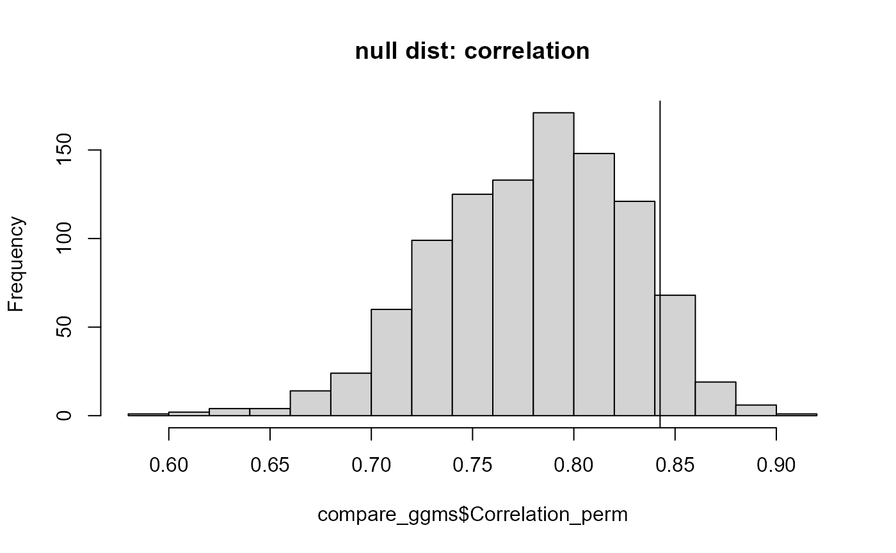
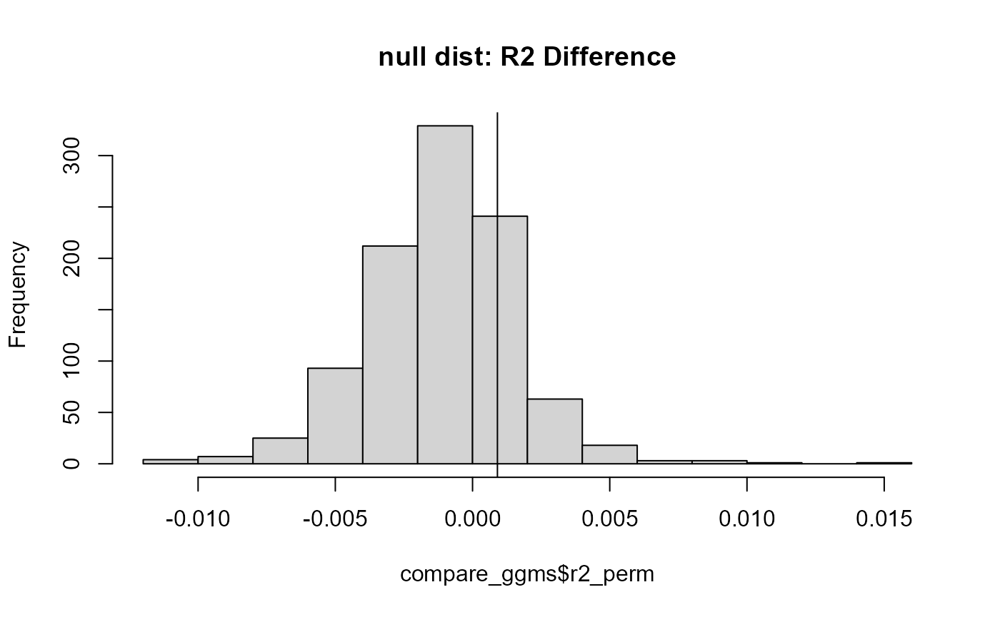

A key feature of nct is the ability to test anything hypothesis, as opposed to the set of defaults provided in the R package NetworkComparisonTest (Van Borkulo et al. 2017).
This first example compares the correlation between edges
library(GGMncv)
set.seed(1)
main <- gen_net(p = 10)
y1 <- MASS::mvrnorm(n = 500,
mu = rep(0, 10),
Sigma = main$cors)
y2 <- MASS::mvrnorm(n = 500,
mu = rep(0, 10),
Sigma = main$cors)
Correlation <- function(x, y){
cor(x[upper.tri(x)], y[upper.tri(x)])
}
compare_ggms <- nct(y1, y2,
FUN = Correlation,
progress = FALSE)
compare_ggms
#> Network Comparsion Test
#> (GGMncv Edition)
#> ----
#> Maximum Difference
#> p-value: 0.756
#> ----
#> Global Strength
#> p-value: 0.904
#> ----
#> Sum of Squared Error
#> p-value: 0.938
#> ----
#> Jensen-Shannon divergence
#> p-value: 0.929
#> ----
#> note: compute p-values manually for custom tests. see vignettes.By default, the \(p\)-value corresponds to the proportion of the null distribution greater than the observed. For some test statistics, this might not make sense so they are not provided.
A fail safe is to visualize the results and compute the \(p\)-value manually.
hist(compare_ggms$Correlation_perm,
main = "null dist: correlation")
abline(v = compare_ggms$Correlation_obs)
Because a higher correlation is a good thing, 1 minus the proportion of the null distribution greater than the observed make sense.
1 - mean(compare_ggms$Correlation_perm > compare_ggms$Correlation_obs)
#> [1] 0.918Next is predictability, or \(R^2\), for the first node in the networks. The first step is defining a function.
# define function
r2 <- function(x, y){
diag(x) <- 1
diag(y) <- 1
# network 1
inv1 <- solve(corpcor::pcor2cor(x))
beta1 <- -(inv1[1,-1] / inv1[1,1])
r21 <- cor(y1[,1], y1[,-1] %*% beta1)^2
# network 2
inv2 <- solve(corpcor::pcor2cor(y))
beta2 <- -(inv2[1,-1] / inv2[1,1])
r22 <- cor(y2[,1], y2[,-1] %*% beta2)^2
return(as.numeric(r21 - r22))
}Next use nct
compare_ggms <- nct(y1, y2,
progress = FALSE,
FUN = r2)
hist(compare_ggms$r2_perm,
main = "null dist: R2 Difference")
abline(v = compare_ggms$r2_obs)
Note anything can be tested, say, expected influence. As such, this is not limited to only one value returned by the custom function (as in the above examples), but can be any number. There is an example in the documentation.
Further, although not provided here, both tests could have been done at the same time by passing a list to FUN, i.e., list_fun <- list(r2 = r2, Correlation = Correlation).